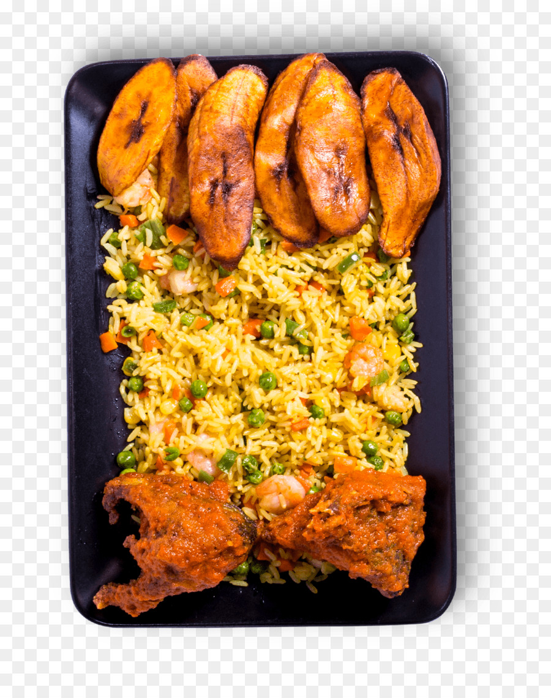
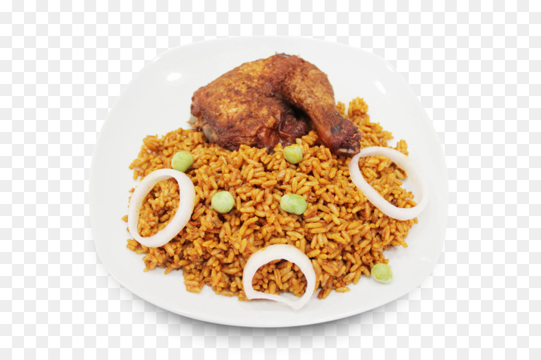

My ethnicity is Yoruba. They are a group of people (several hundreds of tribes) scattered mainly around the southern parts of Nigeria. They have a very rich culture and traditions
There are so many vegetables and fruits used to make Nigerian foods including peppers, rice, yams, tomatoes, and coconuts. Some of the most common spices and seasoning include cayenne pepper, suya seasoning, thyme, curry, and rosemary. These are some of the staple foods
Here are some copyright free photos of Jollof- Rice:)
 